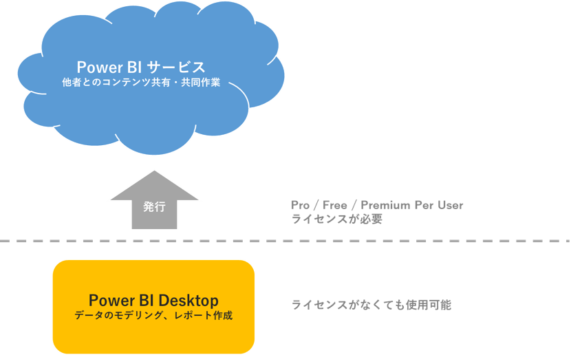

こんにちは、Power BI サポート チームです。
「Power BI Desktop」、「Power BI サービス」、「Power BI Pro」… など色々なキーワードを耳にするけれど、それぞれの機能の違いは？BI レポートを作成するためには何が必要なの？という疑問を持つ方が多くいらっしゃるかと思います。
そこで今回は、Power BI の活用を始めるにあたり、理解しておくべきポイントについて2つに分けてご案内いたします。
- Power BIでレポート作成・分析を行うために必要なものは？ ~ Power BI Desktop とPower BI サービスの違い ~
- 作成したレポートを組織内で共有するために必要なライセンスは？~ Power BIライセンス（Free・Pro・Premium Per User・Premium Per Capacity・Embedded）の違い ~
重要
本記事は弊社公式ドキュメントの公開情報を元に構成しておりますが、
本記事編集時点と実際の機能に相違がある場合がございます。
最新情報につきましては、参考情報として記載しておりますドキュメントをご確認ください。
Power BI でレポート作成・分析を行うために必要なものは？
~ Power BI Desktop とPower BI サービスの違い ~
Power BI は、様々なデータソースを基に、データをビジュアル化したレポートを作成し分析を行うためのツールです。
レポート作成・分析を行う方法として、PCにインストールして使うアプリケーション “Power BI Desktop” とWeb ブラウザからサインインして使うクラウド サービス “Power BI サービス” のご用意があります。
レポート作成においては、Power BI サービスには多くの制限がありPower BI Desktop の方が機能が優れているため、多くのユーザーは「Power BI Desktop でレポートを作成したあと、Power BI サービスでレポートを他のユーザーと共有する」という使い分けをするのが一般的です。

Power BI Desktop とPower BI サービスの機能比較を一覧にすると以下の通りとなります。
| 機能 | Power BI Desktop | Power BI サービス |
|---|---|---|
| 多くのデータソース | 〇 | |
| 変換 | 〇 | |
| 整形とモデリング | 〇 | |
| メジャー | 〇 | |
| 計算列 | 〇 | |
| Python | 〇 | |
| テーマ | 〇 | |
| RLS の作成 | 〇 | |
| レポート | 〇 | 〇 |
| 視覚化 | 〇 | 〇 |
| セキュリティ | 〇 | 〇 |
| フィルター | 〇 | 〇 |
| ブックマーク | 〇 | 〇 |
| Q&A | 〇 | 〇 |
| R ビジュアル | 〇 | 〇 |
| いくつかのデータソース | 〇 | |
| ダッシュボード | 〇 | |
| アプリとワークスペース | 〇 | |
| 共有 | 〇 | |
| データフローの作成 | 〇 | |
| ページ分割されたレポート | 〇 | |
| RLS 管理 | 〇 | |
| ゲートウェイ接続 | 〇 |
Power BI Desktop とPower BI サービスについて、それぞれもう少し詳細にご案内いたします。
Power BI Desktop とは？
Power BI Desktop は、ライセンスの有無に関わらず、誰でも無償でPC にインストールして使用することができるアプリケーションです。
Windows 10 OS (LTSB/LTSCは除く) はMicrosoft Store からストア アプリとしてインストールすることも可能です。
Power BI Desktop でPower BI のライセンス（Free、Pro またはPremium Per User ）が必要となるタイミングとしては、Power BI サービス上のデータセットやデータフローからデータを取得するとき、または作成したレポートをPower BI サービス上に発行するときなど、Power BI サービスと接続を行うときのみであり、レポート作成においてライセンスによる機能差はありません。
上記のようなPower BI サービスとの接続が不要な場合は、サインインする必要はありません。
つまり、ライセンスがなくても使用できます。
参考情報
Power BI Desktop の取得方法や最小要件についてご案内しています。
Power BI サービスとは？
Power BI サービス (app.powerbi.com) は、Web ブラウザ上でサインインすることで、Azure 上でPower BI を使用することができる SaaS (サービスとしてのソフトウェア) の一部です。
レポート、ダッシュボードの作成、アプリ、ワークスペースの使用、コンテンツの共有など、組織内での共同作業において便利な機能のご用意がありますが、所持しているライセンスによって、使用できる機能が異なっていきます。
Power BI ライセンスについては、以下ブログで引き続きご案内いたします。
参考情報
上記内容については、以下公開情報を基にまとめています。
ぜひ本ブログと併せてご覧ください。
以上、本ブログが少しでも皆様のお役に立てますと幸いでございます。
本ブログの関連記事
※本情報の内容（添付文書、リンク先などを含む）は、作成日時点でのものであり、予告なく変更される場合があります。